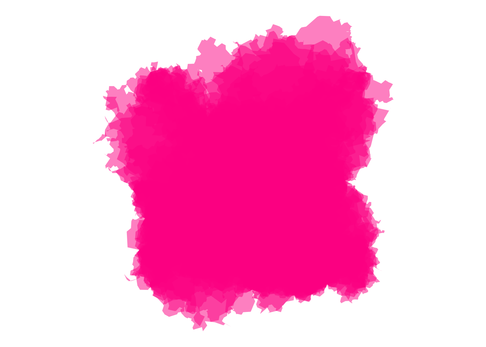
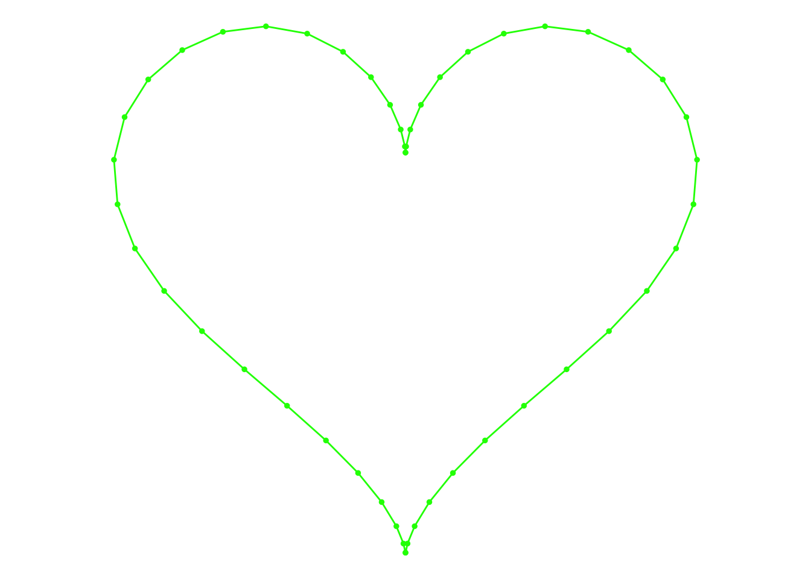

library(ggplot2)Warning: package 'ggplot2' was built under R version 4.1.2library(tibble)Warning: package 'tibble' was built under R version 4.1.2library(ggplot2)Warning: package 'ggplot2' was built under R version 4.1.2library(tibble)Warning: package 'tibble' was built under R version 4.1.2Try it yourself! Using nothing other than ggplot2 and the mpg data set, create your own artwork. Don’t take too long: 3 minutes at the absolute most! See what you can come up with in that time!
mpg# A tibble: 234 × 11
manufacturer model displ year cyl trans drv cty hwy fl class
<chr> <chr> <dbl> <int> <int> <chr> <chr> <int> <int> <chr> <chr>
1 audi a4 1.8 1999 4 auto… f 18 29 p comp…
2 audi a4 1.8 1999 4 manu… f 21 29 p comp…
3 audi a4 2 2008 4 manu… f 20 31 p comp…
4 audi a4 2 2008 4 auto… f 21 30 p comp…
5 audi a4 2.8 1999 6 auto… f 16 26 p comp…
6 audi a4 2.8 1999 6 manu… f 18 26 p comp…
7 audi a4 3.1 2008 6 auto… f 18 27 p comp…
8 audi a4 quattro 1.8 1999 4 manu… 4 18 26 p comp…
9 audi a4 quattro 1.8 1999 4 auto… 4 16 25 p comp…
10 audi a4 quattro 2 2008 4 manu… 4 20 28 p comp…
# ℹ 224 more rows# use mpg dataframe
mpg |>
ggplot(aes(displ, cty, colour = class)) +
geom_point(show.legend = FALSE, size = 4) +
geom_point(show.legend = FALSE, size = 1, colour = "forestgreen") +
coord_map() +
theme_void() +
scale_color_brewer()polar_art.R that contains a copy of the polar_art()function. Open it and use the polar_art() function to generate your own pieces. Try changing the seed, n, and the palette to create a variety of different pieces.library(ggplot2)
library(tibble)
polar_art <- function(seed, n, palette) {
# set the state of the random number generator
set.seed(seed)
# data frame containing random values for
# aesthetics we might want to use in the art
dat <- tibble(
x0 = runif(n),
y0 = runif(n),
x1 = x0 + runif(n, min = -.5, max = .5),
y1 = y0 + runif(n, min = -.5, max = .5),
shade = runif(n),
size = runif(n)
)
# plot segments in various colours, using
# polar coordinates and a gradient palette
dat |>
ggplot(aes(
x = x0,
y = y0,
xend = x1,
yend = y1,
colour = shade,
size = size
)) +
geom_segment(show.legend = FALSE) +
coord_polar() +
scale_y_continuous(expand = c(0, 0)) +
scale_x_continuous(expand = c(0, 0)) +
scale_colour_gradientn(colours = palette) +
scale_size(range = c(0, 5)) +
theme_void()
}
polar_art(
seed = 1,
n = 100,
palette = c("hotpink", "green", "mediumturquoise")
)Warning: Using `size` aesthetic for lines was deprecated in ggplot2 3.4.0.
Warning: Please use `linewidth` instead.polar_art_02.R that contains the polar_art() function. In the new file, try modifying the polar_art() function itself to see if you can create your own new system.In a separate file.
my_file_version_1, my_file_version_2, etc, and instead we place files under version control using git. Yet here I am in an art context, apparently giving the advice to fall back on the old-fashioned system of naming files with version numbers. Why might I be doing that?To separate the original file from the new file.
palette-generators.R that contains a copy of the sample_canva() function. Take a look and try calling the function a few times to see what kind of output it produces. You may find it handy to use show_col() to visualise the results.library(ggthemes)
library(scales)Warning: package 'scales' was built under R version 4.1.2# the original function from the first session
sample_canva <- function(seed = NULL) {
if(!is.null(seed)) set.seed(seed)
sample(ggthemes::canva_palettes, 1)[[1]]
}
# the extended function used in later sessions
sample_canva2 <- function(seed = NULL, n = 4) {
if(!is.null(seed)) set.seed(seed)
sample(ggthemes::canva_palettes, 1)[[1]] |>
(\(x) colorRampPalette(x)(n))()
}
show_col(canva_palettes[[1]])
Changing the number after canva_palettes generates a different palette.
colours() with distinct = TRUE). Write a function called sample_named_colours() that takes n as an input argument, and then returns a sample of nof these colour. Try using it with the polar_art() function.library(ggthemes)
# Write a function called sample_named_colours() that takes n as an input argument, and then returns a sample of n of these colour. Try using it with the polar_art() function.
sample_named_colours <- function(seed, n = 4, palette) {
set.seed(seed)
sample(colours(distinct = F))
}
sample_named_colours(seed = NULL, n = 4, palette = colours) %>%
show_col()sample_canva() function, as I’ve written it, preserves the original structure of the 150 palettes in ggthemes::canva_palettes, so that the 4 colours returned all belong to the same palette on the Canva website originally. Try breaking this constraint. If you call unlist(ggthemes::canva_palettes)you get a vector of 600 distinct colours. Write a palette generating function that samples colours randomly from that set of 600 colours.library(ggthemes)
random_canva_palette <- function(size) {
canva_colors <- unlist(ggthemes::canva_palettes)
sampled_colors <- sample(canva_colors, size)
show_col()
}polar-styled-plots.R that contains a copy of the sample_canva(), sample_data() and polar_styled_plot() functions. Without modifying any of these three functions, explore how much flexibility you have to make different pieces in which (1) data are generated with sample_data(), (2) the plot is initialised by calling polar_styled_plot(), and (3) the piece is created by adding ggplot2 geoms. Data manipulation with dplyr is allowed!library(ggplot2)
library(tibble)
library(dplyr)Warning: package 'dplyr' was built under R version 4.1.2
Attaching package: 'dplyr'The following objects are masked from 'package:stats':
filter, lagThe following objects are masked from 'package:base':
intersect, setdiff, setequal, unionsample_canva <- function(seed = NULL) {
if(!is.null(seed)) set.seed(seed)
sample(ggthemes::canva_palettes, 1)[[1]]
}
sample_data <- function(seed = NULL, n = 100){
if(!is.null(seed)) set.seed(seed)
dat <- tibble(
x0 = runif(n),
y0 = runif(n),
x1 = x0 + runif(n, min = -.2, max = .2),
y1 = y0 + runif(n, min = -.2, max = .2),
shade = runif(n),
size = runif(n),
shape = factor(sample(0:22, size = n, replace = TRUE))
)
}
polar_styled_plot <- function(data = NULL, palette) {
ggplot(
data = data,
mapping = aes(
x = x0,
y = y0,
xend = x1,
yend = y1,
colour = shade,
size = size
)) +
coord_polar(clip = "off") +
scale_y_continuous(
expand = c(0, 0),
limits = c(0, 1),
oob = scales::oob_keep
) +
scale_x_continuous(
expand = c(0, 0),
limits = c(0, 1),
oob = scales::oob_keep
) +
scale_colour_gradientn(colours = palette) +
scale_size(range = c(0, 10)) +
theme_void() +
guides(
colour = guide_none(),
size = guide_none(),
fill = guide_none(),
shape = guide_none()
)
}polar_styled_plot() function plays the role of defining an overarching “style” for possible art pieces, but it doesn’t completely constrain artistic freedom. Your task in this exercise is to try to write a my_styled_plot() that does something similar… but creates a different style that you can explore.library(ggplot2)
library(tibble)
library(dplyr)
sample_canva <- function(seed = NULL) {
if(!is.null(seed)) set.seed(seed)
sample(ggthemes::canva_palettes, 1)[[1]]
}
sample_data <- function(seed = NULL, n = 100){
if(!is.null(seed)) set.seed(seed)
dat <- tibble(
x0 = runif(n),
y0 = runif(n),
x1 = x0 + runif(n, min = -.2, max = .2),
y1 = y0 + runif(n, min = -.2, max = .2),
shade = runif(n),
size = runif(n),
shape = factor(sample(0:22, size = n, replace = TRUE))
)
}
polar_styled_plot <- function(data = NULL, palette) {
ggplot(
data = data,
mapping = aes(
x = x0,
y = y0,
xend = x1,
yend = y1,
colour = shade,
size = size
)) +
coord_polar(clip = "off") +
scale_y_continuous(
expand = c(0, 0),
limits = c(0, 1),
oob = scales::oob_keep
) +
scale_x_continuous(
expand = c(0, 0),
limits = c(0, 1),
oob = scales::oob_keep
) +
scale_colour_gradientn(colours = palette) +
scale_size(range = c(0, 10)) +
theme_void() +
guides(
colour = guide_none(),
size = guide_none(),
fill = guide_none(),
shape = guide_none()
)
}library(dplyr)
library(purrr)Warning: package 'purrr' was built under R version 4.1.2
Attaching package: 'purrr'The following object is masked from 'package:scales':
discardlibrary(tidyr)Warning: package 'tidyr' was built under R version 4.1.2library(tibble)
library(ggplot2)
library(ambient)Warning: package 'ambient' was built under R version 4.1.2library(tictoc)Warning: package 'tictoc' was built under R version 4.1.2library(ggthemes)
library(gifski)#creating the object "square" saved as a tibble that contains x and y columns specifying the coordinates for a square
square <- tibble(
x = c(0, 1, 1, 0, 0),
y = c(0, 0, 1, 1, 0),
#specifies the length of the edge connecting one point to the next one
seg_len = c(1, 1, 1, 1, 0)
)#define a plotting function called "show_polygon" to display a polygon
show_polygon <- function(polygon, show_vertices = TRUE, ...) {
#create an object called "pic" that is a polygon
pic <- ggplot(polygon, aes(x, y)) +
#making the lines black
geom_polygon(colour = "green", fill = NA, show.legend = FALSE, ...) +
coord_equal() +
#assigning the theme so there is nothing displayed besides the edges
theme_void()
# showing the points on nodes where edges connect
if(show_vertices == TRUE) {
#making the points black and defining the point size
pic <- pic + geom_point(colour = "green", size = 1)
}
return(pic)
}
# using function to display the polygon
show_polygon(square)#create a function called "sample_edge" to break one of the edges (not the final point) in two
sample_edge <- function(polygon) {
#break the edge only one time (learned that the hard way)
sample(nrow(polygon), 1, prob = polygon$seg_len)
}#create a function called "sample_edge" to compute the length of these two new edges
edge_length <- function(x1, y1, x2, y2) {
#calculating euclidean distance with new coordinates
sqrt((x1 - x2)^2 + (y1 - y2)^2)
}#create a function called "edge_noise" to add a number used to scale the amount of noise
edge_noise <- function(size) {
#uniform distribution with minimum -2 and maximum 2
runif(1, min = -size/2, max = size/2)
}# define a function called "insert_edge" that breaks an edge into two edges and uses edge_noise to scale the amount of noise
insert_edge <- function(polygon, noise) {
# sample and edge and remember its length
ind <- sample_edge(polygon)
len <- polygon$seg_len[ind]
# one endpoint of the old edge
last_x <- polygon$x[ind]
last_y <- polygon$y[ind]
# the other endpoint of the old edge
next_x <- polygon$x[ind + 1]
next_y <- polygon$y[ind + 1]
# location of the new point to be inserted: noise
# is scaled proportional to the length of the old edge
new_x <- (last_x + next_x) / 2 + edge_noise(len * noise)
new_y <- (last_y + next_y) / 2 + edge_noise(len * noise)
# the new row for insertion into the tibble,
# containing coords and length of the 'new' edge
new_row <- tibble(
x = new_x,
y = new_y,
seg_len = edge_length(new_x, new_y, next_x, next_y)
)
# update the length of the 'old' edge
polygon$seg_len[ind] <- edge_length(
last_x, last_y, new_x, new_y
)
# insert a row into the tibble
bind_rows(
polygon[1:ind, ],
new_row,
polygon[-(1:ind), ]
)
}#display polygons with edge breaks
set.seed(2)
polygon <- square
#define shape as a square
polygon <- insert_edge(polygon, noise = .4); show_polygon(polygon)#insert an edge break
polygon <- insert_edge(polygon, noise = .5); show_polygon(polygon)# insert a second edge break
polygon <- insert_edge(polygon, noise = .6); show_polygon(polygon)# define a function called "grow_polygon" that essentially repeats insert_edge function to make a polygon with a defined amount of edges
grow_polygon <- function(polygon, iterations, noise, seed = NULL) {
if(!is.null(seed)) set.seed(seed)
for(i in 1:iterations) polygon <- insert_edge(polygon, noise)
return(polygon)
}#call the function to display a polygon with 30 edge breaks and no defined nodes
square |>
grow_polygon(iterations = 10, noise = .5, seed = 2) |>
#display nodes to see where the edges were broken
show_polygon(show_vertices = T)#call the function to display a polygon with 100 edge breaks and no defined nodes
square |>
grow_polygon(iterations = 150, noise = .5, seed = 2) |>
show_polygon(show_vertices = F)#call the function to display a polygon with 1000 edge breaks and no defined nodes
square |>
grow_polygon(iterations = 2000, noise = .5, seed = 2) |>
show_polygon(show_vertices = F)
# define a function called "grow_multipolygon" to create many deformed polygons in the same area
grow_multipolygon <- function(base_shape, n, seed = NULL, ...) {
if(!is.null(seed)) set.seed(seed)
polygons <- list()
for(i in 1:n) {
polygons[[i]] <- grow_polygon(base_shape, ...)
}
polygons <- bind_rows(polygons, .id = "id")
polygons
}
#define a function called "show_multipolygon" that plots many polygons with a low opacity
show_multipolygon <- function(polygon, fill, alpha = .02, ...) {
ggplot(polygon, aes(x, y, group = id)) +
geom_polygon(colour = NA, alpha = alpha, fill = fill, ...) +
coord_equal() +
theme_void()
}#use tic function to store the start time
tic()
# create an object building off the square tibble
dat <- square |>
# 100 edge breaks
grow_polygon(iterations = 50, noise = .5, seed = 2) |>
# add 50 polygons with 1000 edge breaks
grow_multipolygon(n = 100, iterations = 500, noise = 1, seed = 2)
#use toc function to note the current timer and compute elapsed time since tic ran
toc()52.548 sec elapsed#displaying new multipolygon in blue
show_multipolygon(dat, fill = "blue")Exercise
grow-polygon.R function. Try modifying the iterations, noise, and seed arguments to see what kind of output is created at different parameter values.Iterations: 1 iterations is the base square with one edge broken. An iteration is an additional edge break. For every one iteration you add, one of the edges is broken and split into two. For every iteration, there will be (2 * (# of iternations)) + 1 = number of nodes.
Noise: Increasing nodes increasing the intensity of bent edges when an iteration is added. For example, all else held constant at iterations = 3 and seed = 2, noise of 0.1 will closely resemble the base square because the bent edges are not that dramatic. If the noise is 5, the polygon will be hardly recognizable because the edges will have bent so much that the polygon changes shape dramatically.
Seed: In no particular fashion, changing the seed number changes where the edges are broken and drastically changes the shape. There is no direct relationship between shape change and seed change, it is random.
square |>
grow_polygon(iterations = 3, noise = .6, seed = 2) |>
show_polygon(show_vertices = T)square |>
grow_polygon(iterations = 3, noise = .4, seed = 2) |>
show_polygon(show_vertices = T)grow-multipolygons.R file contains the extra machinery to create these textured plots. Try playing around with the code for this. I’ve tweaked the parameter settings so that it runs faster than the code shown here, but doesn’t produce output that looks quite as nice.I edited the original code to limit the number of iterations in the original polygon, add more polygons, and limit the iterations on those polygons. Adding more polygons expectedly made the shape darker. I also decreased noise in the multipolygons to make the shapes more recognizable. I changed seed to 1 for both to add variety from the original code and changed the color.
tic()
dat <- square |>
grow_polygon(iterations = 50, noise = .5, seed = 1) |>
grow_multipolygon(n = 100, iterations = 500, noise = .5, seed = 1)
toc()52.454 sec elapsedshow_multipolygon(dat, fill = "darkolivegreen4")edge_length <- function(x1, y1, x2, y2) {
sqrt((x1 - x2)^2 + (y1 - y2)^2)
}
edge_noise <- function(size) {
runif(1, min = -size/2, max = size/2)
}
sample_edge_l <- function(polygon) {
sample(length(polygon), 1, prob = map_dbl(polygon, ~ .x$seg_len))
}
insert_edge_l <- function(polygon, noise) {
ind <- sample_edge_l(polygon)
len <- polygon[[ind]]$seg_len
last_x <- polygon[[ind]]$x
last_y <- polygon[[ind]]$y
next_x <- polygon[[ind + 1]]$x
next_y <- polygon[[ind + 1]]$y
new_x <- (last_x + next_x) / 2 + edge_noise(len * noise)
new_y <- (last_y + next_y) / 2 + edge_noise(len * noise)
new_point <- list(
x = new_x,
y = new_y,
seg_len = edge_length(new_x, new_y, next_x, next_y)
)
polygon[[ind]]$seg_len <- edge_length(
last_x, last_y, new_x, new_y
)
c(
polygon[1:ind],
list(new_point),
polygon[-(1:ind)]
)
}
grow_polygon_l <- function(polygon, iterations, noise, seed = NULL) {
if(!is.null(seed)) set.seed(seed)
for(i in 1:iterations) polygon <- insert_edge_l(polygon, noise)
return(polygon)
}
grow_multipolygon_l <- function(base_shape, n, seed = NULL, ...) {
if(!is.null(seed)) set.seed(seed)
polygons <- list()
for(i in 1:n) {
polygons[[i]] <- grow_polygon_l(base_shape, ...) |>
transpose() |>
as_tibble() |>
mutate(across(.fn = unlist))
}
polygons <- bind_rows(polygons, .id = "id")
polygons
}show_multipolygon <- function(polygon, fill, alpha = .02, ...) {
ggplot(polygon, aes(x, y, group = id)) +
geom_polygon(colour = NA, alpha = alpha, fill = fill, ...) +
coord_equal() +
theme_void()
}
splotch <- function(seed, layers = 10) {
set.seed(seed)
square_l <- transpose(tibble(
x = c(0, 1, 1, 0, 0),
y = c(0, 0, 1, 1, 0),
seg_len = c(1, 1, 1, 1, 0)
))
square_l |>
grow_polygon_l(iterations = 10, noise = .5, seed = seed) |>
grow_multipolygon_l(n = layers, iterations = 500, noise = .8, seed = seed)
}#define functio grow_polygon_l
tic()
#results
splotch_1 <- splotch(seed = 12) Warning: There was 1 warning in `mutate()`.
ℹ In argument: `across(.fn = unlist)`.
Caused by warning:
! Using `across()` without supplying `.cols` was deprecated in dplyr 1.1.0.
ℹ Please supply `.cols` instead.splotch_2 <- splotch(seed = 34)
splotch_3 <- splotch(seed = 56)
splotch_4 <- splotch(seed = 150)
toc()8.597 sec elapsed#exploring colors
show_multipolygon(splotch_1, fill = "chocolate1", alpha = .2)show_multipolygon(splotch_2, fill ="cornflowerblue", alpha = .2)show_multipolygon(splotch_3, fill ="blueviolet", alpha = .2)show_multipolygon(splotch_4, fill ="deeppink", alpha = .5)
Code for these two systems is included in the splotch.R and smudged-hexagon.R scripts.
layers argument in the splotch() system, and how it interacts with the alpha argument to show_multipolygon()The layers argument adds various layers of shapes on top of the original polygon. The more layers, the darker the color and the more shapes produced. The alpha argument is actually responsible for making the color darker.
smudged_hexagon() system that creates a smudged triangle, or, if you’re feeling more ambitious and want to read slightly further down the page to look for the code you need, a smudged heart shape!# defining a function to create a shape with a naturalistic look overlayed on top of a defined triangle
smudged_triangle <- function(seed, noise1 = 0, noise2 = 2, noise3 = 0.5) {
set.seed(seed)
# define triangular base shape
theta <- (0:3) * pi / 1.5
triangle <- tibble(
x = sin(theta),
y = cos(theta),
seg_len = edge_length(x, y, lead(x), lead(y))
)
triangle$seg_len[4] <- 0
triangle <- transpose(triangle)
base <- triangle |>
grow_polygon_l(
iterations = 30,
noise = noise1
)
# define intermediate-base-shapes in clusters
polygons <- list()
ijk <- 0
for(i in 1:3) {
base_i <- base |>
grow_polygon_l(
iterations = 50,
noise = noise2
)
for(j in 1:3) {
base_j <- base_i |>
grow_polygon_l(
iterations = 50,
noise = noise2
)
# grow 10 polygons per intermediate-base
for(k in 1:10) {
ijk <- ijk + 1
polygons[[ijk]] <- base_j |>
grow_polygon_l(
iterations = 500,
noise = noise3
) |>
transpose() |>
as_tibble() |>
mutate(across(.fn = unlist))
}
}
}
# return as data frame
bind_rows(polygons, .id = "id")
}tic()
dat <- smudged_triangle(seed = 1)
toc()26.009 sec elapseddat |> show_multipolygon(fill = "springgreen3")mutate() and arrange()? What would have happened without that code?The call to mutate() modifies the dataframe by assigning a unique ID to each triangle and the arrange() call orders rows by column values using the id column, so it arranges the triangles by their unique IDs. Without these columns, only one triangle would be produced because the code is originally designed for only one triangle.
dat <- bind_rows(
#smudging a triangle
smudged_triangle(seed = 11),
smudged_triangle(seed = 44),
smudged_triangle(seed = 88),
.id = "source"
)
ggplot(dat, aes(x, y, group = id, fill = factor(source))) +
geom_polygon(alpha = .02, show.legend = FALSE) +
theme_void() +
#colors
scale_fill_manual(values = c(
"#ff1b8d", "#ffda00", "#1bb3ff"
)) +
coord_equal() Code for this system is included in the perlin-blob.R script. You can also find analogous code for the Perlin heart system describe in in the next section in the perlin-heart.R script.
perlin_heart() that I showed above with perlin_blob()#normalizing the radius of heart bumps
normalise_radius <- function(x, min, max) {
normalise(x, from = c(-0.1, 0.9), to = c(min, max))
}
#x coordinates for heart
heart_x <- function(angle) {
x <- (16 * sin(angle) ^ 3) / 17
return(x - mean(x))
}
#y coordinates for heart
heart_y <- function(angle) {
y <- (13 * cos(angle) - 5 * cos(2 * angle) - 2 * cos(3 * angle) -
cos(4 * angle)) / 17
return(y - mean(y))
}
# heart tibble
heart_shape <- tibble(
angle = seq(0, 2 * pi, length.out = 50),
x = heart_x(angle),
y = heart_y(angle)
)
#display heart
show_polygon(heart_shape)
# defining heart
perlin_heart <- function(n = 100,
freq_init = 0.3,
octaves = 2,
r_min = 0.5,
r_max = 1,
x_shift = 0,
y_shift = 0,
id = NA,
seed = NULL) {
if(!is.null(seed)) set.seed(seed)
tibble(
angle = seq(0, 2*pi, length.out = n),
x_base = cos(angle),
y_base = sin(angle),
radius = fracture(
x = x_base,
y = y_base,
freq_init = freq_init,
noise = gen_perlin,
fractal = fbm,
octaves = octaves
) |>
normalise_radius(r_min, r_max),
x = radius * heart_x(angle) + x_shift,
y = radius * heart_y(angle) + y_shift,
id = id
)
}
perlin_heart(seed = 1) |> show_polygon(FALSE)perlin_heart(seed = 2) |> show_polygon(FALSE)perlin_heart(seed = 3) |> show_polygon(FALSE)#making a weird shape
perlin_blob <- function(n = 100,
freq_init = 0.2,
octaves = 2,
r_min = 0.5,
r_max = 1) {
tibble(
angle = seq(5, pi, length.out = n),
x_base = cos(angle),
y_base = sin(angle),
radius = fracture(
x = x_base,
y = y_base,
freq_init = freq_init,
noise = gen_perlin,
fractal = fbm,
octaves = octaves
) |>
normalise_radius(r_min, r_max),
x = radius * x_base,
y = radius * y_base
)
}
# Here are three outputs from our perlin_blob() function:
set.seed(1); perlin_blob() |> show_polygon(FALSE)
set.seed(2); perlin_blob() |> show_polygon(FALSE)set.seed(3); perlin_blob() |> show_polygon(FALSE)# To give you a feel for how this function behaves, here’s a few images showing the effect of changing the freq_init parameter. This argument is used to set the overall noise level when generating fractal noise patterns:
set.seed(1); perlin_blob(freq_init = .2) |> show_polygon(FALSE)set.seed(1); perlin_blob(freq_init = .4) |> show_polygon(FALSE)set.seed(1); perlin_blob(freq_init = .8) |> show_polygon(FALSE)# The effect of the radius parameters is slightly different to the effect of the noise parameter. Shifting the r_min and r_max arguments has the effect of “globally flattening” the pattern of variation because the overall shape can only vary within a narrow bound. But it’s quite possible to set a high value for freq_init (causing noticeable distortions to the radius to emerge even at small scales) while constraining the global shape to be almost perfectly circular. The result is a rough-edged but otherwise perfect circle:
set.seed(1);
perlin_blob(
n = 1000,
freq_init = 10,
r_min = .95,
r_max = 1
) |>
show_polygon(FALSE)Code for this system is included as the perlin-heart-grid.R script. To check that you understand it, try modifying it in the following ways:
#putting half the hearts
perlin_heart_grid <- function(nx = 5, ny = 3, seed = NULL) {
if(!is.null(seed)) set.seed(seed)
heart_settings <- expand_grid(
r_min = .3,
r_max = .4,
x_shift = 1:nx,
y_shift = 1:ny
) |>
mutate(id = row_number())
heart_data <- pmap_dfr(heart_settings, perlin_heart)
heart_data |>
ggplot(aes(x, y, group = id, fill = sample(id))) +
geom_polygon(size = 0, show.legend = FALSE) +
theme_void() +
scale_fill_gradientn(colours = sample_canva(seed)) +
coord_equal(xlim = c(0, nx + 1), ylim = c(0, ny + 1))
}
perlin_heart_grid(seed = 451)#adding noise
perlin_heart_grid_2 <- function(nx = 5, ny = 3, seed = NULL, noise = NULL) {
if(!is.null(seed)) set.seed(seed)
heart_settings <- expand_grid(
r_min = .3,
r_max = .4,
x_shift = 1:nx,
y_shift = 1:ny
) |>
mutate(id = row_number())
heart_data <- pmap_dfr(heart_settings, perlin_heart)
heart_data |>
ggplot(aes(x, y, group = id, fill = sample(id))) +
geom_polygon(size = 0, show.legend = FALSE) +
theme_void() +
scale_fill_gradientn(colours = sample_canva(seed)) +
coord_equal(xlim = c(0, nx + .5), ylim = c(0, ny + .5))
}
perlin_heart_grid_2(seed = 451, noise = 10)# setting random seed
set.seed(1);
# defining dimensions of perlin heart
perlin_heart(
n = 1000,
#adding roughness
freq_init = 10,
r_min = .95,
r_max = 1
) |>
show_polygon(FALSE)Code for this system is included as the perlin-heart-grid-2.R script. Can you modify it so that each heart is plotted in a single colour rather than in the banded pattern? With different hearts having different colours?
library(dplyr)
library(purrr)
library(tidyr)
library(tibble)
library(ggplot2)
library(ambient)
library(tictoc)
library(ggthemes)
library(gifski)
sample_canva <- function(seed = NULL) {
if(!is.null(seed)) set.seed(seed)
sample(ggthemes::canva_palettes, 2)[[1]]
}
show_polygon <- function(polygon, show_vertices = TRUE, ...) {
pic <- ggplot(polygon, aes(x, y)) +
geom_polygon(colour = "black", fill = NA, show.legend = FALSE, ...) +
coord_equal() +
theme_void()
if(show_vertices == TRUE) {
pic <- pic + geom_point(colour = "black", size = 2)
}
return(pic)
}
heart_x <- function(angle) {
x <- (16 * sin(angle) ^ 3) / 17
return(x - mean(x))
}
heart_y <- function(angle) {
y <- (13 * cos(angle) - 5 * cos(2 * angle) - 2 * cos(3 * angle) -
cos(4 * angle)) / 17
return(y - mean(y))
}
normalise_radius <- function(x, min, max) {
normalise(x, from = c(-0.5, 0.5), to = c(min, max))
}
perlin_heart2 <- function(n = 100,
freq_init = 0.3,
octaves = 2,
r_min = 0.5,
r_max = 1,
w_min = 0,
w_max = 4,
rot = 0,
x_shift = 0,
y_shift = 0,
id = NA,
seed = NULL) {
if(!is.null(seed)) set.seed(seed)
tibble(
angle = seq(0, 2*pi, length.out = n),
radius = fracture(
x = cos(angle),
y = sin(angle),
freq_init = freq_init,
noise = gen_perlin,
fractal = fbm,
octaves = octaves
) |>
normalise_radius(r_min, r_max),
x = radius * heart_x(angle) + x_shift,
y = radius * heart_y(angle) + y_shift,
width = fracture(
x = cos(angle + rot),
y = sin(angle + rot),
freq_init = freq_init,
noise = gen_perlin,
fractal = fbm,
octaves = octaves
) |>
normalise(to = c(w_min, w_max)),
id = id
)
}
perlin_heart_grid2 <- function(nx = 4, ny = 2, seed = NULL) {
if(!is.null(seed)) set.seed(seed)
heart_settings <- expand_grid(
r_min = .3,
r_max = .4,
w_min = .01,
w_max = 6,
x_shift = 1:nx,
y_shift = 1:ny
) |>
mutate(
n = 200,
x_shift = x_shift + runif(n(), -.1, .1),
y_shift = y_shift + runif(n(), -.1, .1),
rot = runif(n(), -.1, .1),
id = row_number()
)
heart_data <- pmap_dfr(heart_settings, perlin_heart2)
heart_data |>
ggplot(aes(x, y, group = id, colour = sample(id), size = width)) +
geom_path(show.legend = FALSE) +
theme_void() +
scale_size_identity() +
scale_colour_gradientn(colours = sample_canva(seed)) +
scale_x_continuous(expand = c(0, 0)) +
scale_y_continuous(expand = c(0, 0)) +
coord_fixed(xlim = c(0, nx + 1), ylim = c(0, ny + 1))
}
pic <- perlin_heart_grid2(seed = 666)
plot(pic)Code for this system is included in the perlin-heart-animated.R script. Personally I just find this one fun to play with, so instead of setting an exercise I’ll let you take a look!
#loading in packages
library(purrr)
library(tidyr)
library(tibble)
library(ggplot2)
library(ambient)
library(tictoc)
library(ggthemes)
#new package to help save the gif!
library(gifski)
library(here)here() starts at /Users/beniselimon/GitHub/ENVS-193DS_choyoa-3_limon-benise#defining color palette
sample_canva <- function(seed = NULL) {
if(!is.null(seed)) set.seed(seed)
sample(ggthemes::canva_palettes, 1)[[1]]
}
#displaying the polygon
show_polygon <- function(polygon, show_vertices = TRUE, ...) {
#defining the background should be void
pic <- ggplot(polygon, aes(x, y)) +
geom_polygon(colour = "black", fill = NA, show.legend = FALSE, ...) +
coord_equal() +
theme_void()
if(show_vertices == TRUE) {
pic <- pic + geom_point(colour = "black", size = 2)
}
return(pic)
}
#defining the heart shape
heart_x <- function(angle) {
x <- (16 * sin(angle) ^ 3) / 17
return(x - mean(x))
}
heart_y <- function(angle) {
y <- (13 * cos(angle) - 5 * cos(2 * angle) - 2 * cos(3 * angle) -
cos(4 * angle)) / 17
return(y - mean(y))
}
#heart size
normalise_radius <- function(x, min, max) {
normalise(x, from = c(-0.5, 0.5), to = c(min, max))
}
#putting the pieces together to actually make the heart
perlin_heart2 <- function(n = 100,
freq_init = 0.3,
octaves = 2,
r_min = 0.5,
r_max = 1,
w_min = 0,
w_max = 4,
rot = 0,
x_shift = 0,
y_shift = 0,
id = NA,
seed = NULL) {
if(!is.null(seed)) set.seed(seed)
tibble(
angle = seq(0, 2*pi, length.out = n),
radius = fracture(
x = cos(angle),
y = sin(angle),
freq_init = freq_init,
noise = gen_perlin,
fractal = fbm,
octaves = octaves
) |>
normalise_radius(r_min, r_max),
x = radius * heart_x(angle) + x_shift,
y = radius * heart_y(angle) + y_shift,
width = fracture(
x = cos(angle + rot),
y = sin(angle + rot),
freq_init = freq_init,
noise = gen_perlin,
fractal = fbm,
octaves = octaves
) |>
normalise(to = c(w_min, w_max)),
id = id
)
}
#defining number of heart outlines
perlin_heart_data <- function(nhearts = 10, scatter = .05, seed = NULL) {
if(!is.null(seed)) set.seed(seed)
palette <- sample_canva(seed) |>
(\(x) colorRampPalette(x)(nhearts))()
#saving heart as a tibble to be referenced later
heart_settings <- tibble(
id = 1:nhearts,
n = 500,
r_min = .35,
r_max = .4,
w_min = -10,
w_max = 10,
x_shift = runif(nhearts, -scatter/2, scatter/2),
y_shift = runif(nhearts, -scatter/2, scatter/2),
rot = runif(nhearts, -pi, pi)
)
heart_settings |>
pmap_dfr(perlin_heart2) |>
group_by(id) |>
mutate(
shade = sample(palette, 1),
width = abs(width)
)
}
#animation part!
generate_one_frame <- function(dat) {
pic <- dat |>
ggplot(aes(x, y, group = id, size = width, colour = shade)) +
geom_path(show.legend = FALSE) +
theme_void() +
scale_x_continuous(expand = c(0, 0)) +
scale_y_continuous(expand = c(0, 0)) +
scale_colour_identity() +
scale_size_identity() +
coord_fixed(xlim = c(-.6, .6), ylim = c(-.6, .6))
print(pic)
}
rotate_vector <- function(x, percent) {
len <- length(x)
ind <- ceiling(len * percent)
if(ind == 0) return(x)
if(ind == len) return(x)
c(x[(ind+1):len], x[1:ind])
}
generate_all_frames <- function(dat, nframes = 100) {
for(frame in 1:nframes) {
dat |>
group_by(id) |>
mutate(width = width |> rotate_vector(frame / nframes)) |>
generate_one_frame()
}
}
animated_perlin_heart <- function(seed, ...) {
#saving the file
gif_file <- paste0("animated-perlin-heart-", seed, ".gif")
save_gif(
expr = perlin_heart_data(seed = seed, ...) |> generate_all_frames(),
gif_file = here("output", gif_file),
height = 1000,
width = 1000,
delay = .1,
progress = TRUE,
bg = "#222222"
)
invisible(NULL)
}
tic()
animated_perlin_heart(seed = 99)
toc()14.861 sec elapsedCode for this system is included in the textured-lines.R script. Try to use this a jumping-off point for designing your own system for generating textured lines. There’s no real reason why you should do it my way. How would you do this yourself?
#loading in relevant packages
library(dplyr)
library(tibble)
library(ggplot2)
library(here)
library(e1071)Warning: package 'e1071' was built under R version 4.1.2#defining a function to create the shape
smooth_loess <- function(x, span) {
n <- length(x)
dat <- tibble(time = 1:n, walk = x)
mod <- loess(walk ~ time, dat, span = span)
predict(mod, tibble(time = 1:n))
}
#defining a function to make the lines more smooth
smooth_path <- function(n = 1000, smoothing = .4, seed = NULL) {
if(!is.null(seed)) set.seed(seed)
tibble(
x = smooth_loess(rbridge(1, n), span = smoothing),
y = smooth_loess(rbridge(1, n), span = smoothing),
stroke = 1
)
}
#defining a function to add noise/make the shape look more natural
perturb <- function(path, noise = .02, span = .1) {
path |>
group_by(stroke) |>
mutate(
x = x + rnorm(n(), 0, noise),
y = y + rnorm(n(), 0, noise),
x = smooth_loess(x, span),
y = smooth_loess(y, span),
alpha = runif(n()) > .5,
size = runif(n(), 0, .2)
)
}
#defining a function that gives the shape the painted look
brush <- function(path, bristles = 100, seed = 1, ...) {
set.seed(seed)
dat <- list()
for(i in 1:bristles) {
dat[[i]] <- perturb(path, ...)
}
return(bind_rows(dat, .id = "id"))
}
#defining a function that identifies how the brush stroke is used and the color (i love hot pink)
stroke <- function(dat, geom = geom_path, colour = "hotpink", ...) {
dat |>
ggplot(aes(
#changing the way it makes the shape to take the sine and cosine of x and y
x = sin(x),
y = cos(y),
alpha = alpha,
size = size,
group = paste0(stroke, id)
)) +
#background color
geom(
colour = colour,
show.legend = FALSE,
...
) +
coord_equal() +
scale_alpha_identity() +
scale_size_identity() +
theme_void() +
theme(plot.background = element_rect(
fill = "grey",
colour = "grey"
))
}
#displaying the function
path <- smooth_path(seed = 500)
pic <- path |> brush() |> stroke()
plot(pic)#loading in packages
library(dplyr)
library(tibble)
library(ggplot2)
library(ggforce)Warning: package 'ggforce' was built under R version 4.1.2library(ggfx)Warning: package 'ggfx' was built under R version 4.1.2library(flametree)
library(ambient)A script containing this code is included as the flametree-example.R script.
#creating a dataframe called tree that uses data from the flametree package and shows the tree with a random shape determined by the metrics seed, time, and angle
tree <- flametree_grow(
#determines how many branches the tree splits off into
seed = 2,
# how many flowers on tree
time = 8,
#angle of the leaves/branches branching down
angle = c(-20, 20, 40)
)
#object called leaf from tree object that assigns ids to the leaves
leaf <- tree |> filter(id_leaf == TRUE)
#creating the base of the tree using ggplot
base <- ggplot() +
scale_size_identity() +
theme_void() +
coord_equal()
#assigning color and shape of leaves
leaves <- geom_point(
mapping = aes(coord_x, coord_y),
data = leaf,
#size of leaf
size = 1,
#thickness of leaf
stroke = 0.1,
#color of leaf
colour = "mediumorchid1"
)
#creating shape of trunk
trunk <- geom_bezier(
#assigning coordinates from tree dataframe
mapping = aes(coord_x, coord_y, group = id_pathtree, size = seg_wid),
data = tree,
#shape of ends of edges
lineend = "round",
#color of trunk
colour = "lemonchiffon4",
#hides legend but there's no legend anyway so idk
show.legend = F
)
#put it all together!
plot(base + trunk + leaves)A script containing this code is included as the ggfx-glow.R file
#creating an object called tree that uses data from the flametree package and shows the tree with a random shape determined by the metrics seed, time, and angle
tree <- flametree_grow(
#determines how many branches the tree splits off into
seed = 2,
# how many flowers on tree
time = 8,
#angle of the leaves/branches branching down
angle = c(-20, 20, 40)
)
#object called leaf from tree object that assigns ids to the leaves
leaf <- tree |> filter(id_leaf == TRUE)
#creating the base of the tree using ggplot
base <- ggplot() +
scale_size_identity() +
theme_void() +
coord_equal()
#assigning color and shape of leaves
leaves <- geom_point(
mapping = aes(coord_x, coord_y),
data = leaf,
#size of leaf
size = 1,
#thickness of leaf
stroke = 0.1,
#color of leaf
colour = "mediumorchid1"
)
#creating shape of trunk
trunk <- geom_bezier(
#assigning coordinates from tree dataframe
mapping = aes(coord_x, coord_y, group = id_pathtree, size = seg_wid),
data = tree,
#shape of ends of edges
lineend = "round",
#color of trunk
colour = "lemonchiffon4",
#hides legend but there's no legend anyway so idk
show.legend = F
)
# put it all together but this time use the ggfx package to add a glow around the leaves
plot(
base +
trunk +
#plot leaves with glowing yellow color around them
with_outer_glow(leaves, colour = "lightgoldenrod1", sigma = 5, expand = 3)
)A script containing this code is included as the ggfx-dither.R file
set.seed(1)
# create a tibble called polar
polar <- tibble(
#assign beginning and end of arc
#higher numbers make less gaps
arc_start = runif(150),
arc_end = arc_start + runif(150, min = -.1, max = .1),
radius = runif(150),
shade = runif(150),
size = runif(150)
)
#create base of polar circle thing
base <- ggplot(
data = polar,
mapping = aes(
x = arc_start,
y = radius,
xend = arc_end,
yend = radius,
colour = shade,
size = size
)
) +
#assign the little open parts of the polar shape
coord_polar(clip = "off") +
scale_y_continuous(limits = c(0, 1), oob = scales::oob_keep) +
scale_x_continuous(limits = c(0, 1), oob = scales::oob_keep) +
scale_colour_viridis_c(option = "magma") +
guides(colour = guide_none(), size = guide_none()) +
scale_size(range = c(0, 10)) +
theme_void() +
theme(panel.background = element_rect(fill = "lightgreen"))
#put it together
plot(base + with_halftone_dither(geom_segment()))A script containing this code is included as the ggfx-mask.R file
#making the texture using raster/pixels
texture <- geom_raster(
mapping = aes(x, y, fill = paint),
data = long_grid(
#assigning how many pixels you want around the border
x = seq(from = -1, to = 1, length.out = 1000),
y = seq(from = -1, to = 1, length.out = 1000)
) |>
mutate(
#adding noise
lf_noise = gen_simplex(x, y, frequency = 2, seed = 1234),
mf_noise = gen_simplex(x, y, frequency = 20, seed = 1234),
hf_noise = gen_simplex(x, y, frequency = 99, seed = 1234),
paint = lf_noise + mf_noise + hf_noise
)
)
#making a tibble called hex that makes the shape of the plot
hex <- tibble(x = sin((0:6)/6 * 2 * pi), y = cos((0:6)/6 * 2 * pi))
#adding the mask
mask <- geom_polygon(aes(x, y), hex, fill = "white")
#building the base in ggplot
base <- ggplot() +
theme_void() +
coord_equal() +
scale_x_continuous(expand = c(0, 0)) +
scale_y_continuous(expand = c(0, 0)) +
scale_fill_gradientn(
colours = c("#222222","lawngreen"),
guide = guide_none()
)
#building the border and assigning color
border <- geom_path(aes(x, y), hex, colour = "#222222", size = 13)
#writing the text
text <- geom_text(
mapping = aes(x, y, label = text),
dat = tibble(x = 0, y = 0, text = "ART"),
size = 30,
colour = "#222222",
fontface = "bold"
)
#putting it all together
plot(
base +
as_group(texture, text, border, id = "content") +
as_reference(mask, id = "mask") +
with_mask("content", "mask")
)A script containing this code is included as the ggfx-displace.R file
#use displacement to shift all the pixels in one layer based on the pixel values in another layer (referred to as the displacement map)
#create the initial polygon layer and assign color
polygon_layer <- function(x, y, fill = "hotpink", alpha = .5) {
geom_polygon(aes(x, y), fill = fill, alpha = alpha)
}
#four additional polygon layers building off the original layer but slightly changing the coordinates
poly1 <- polygon_layer(x = c(1, 0, 0), y = c(0, 0, 1))
poly2 <- polygon_layer(x = c(0, 1, 1), y = c(0, 0, 1))
poly3 <- polygon_layer(x = c(.3, 1, 1), y = c(0, 0, .7))
poly4 <- polygon_layer(x = c(0, 0, .7), y = c(.3, 1, 1))
#building the base in ggplot
base <- ggplot() +
coord_equal(xlim = c(0, 1), ylim = c(0, 1)) +
theme_void() +
theme(panel.background = element_rect(fill = "violetred4"))
#adding text and color
text <- geom_text(
mapping = aes(0.5, 0.5, label = "CODE"),
size = 40,
colour = "white",
fontface = "bold"
)
#put it all together
plot(
base +
as_group(poly1, poly2, poly3, poly4, id = "polygons", include = TRUE) +
as_reference("polygons", id = "displacement_map") +
with_displacement(
text,
x_map = ch_alpha("displacement_map"),
y_map = ch_alpha("displacement_map"),
x_scale = 150,
y_scale = -150
)
)A script containing this code is included as the ggfx-blend.R file
#creating a dataframe called tree that uses data from the flametree package and shows the tree with a random shape determined by the metrics seed, time, and angle
tree <- flametree_grow(
#determines how many branches the tree splits off into
seed = 1,
# how many flowers on tree
time = 9,
#angle of the leaves/branches branching down
angle = c(-15, 15, 30)
)
#object called leaf from tree object that assigns ids to the leaves
leaf <- tree |> filter(id_leaf == TRUE)
#creating leaves of tree using geom_point
leaves <- geom_point(
data = leaf,
mapping = aes(coord_x, coord_y, colour = seg_col),
colour = "darkgreen",
size = 2,
stroke = 0
)
#definign trunk of tree
trunk <- geom_bezier(
data = tree,
mapping = aes(
x = coord_x,
y = coord_y,
size = seg_wid,
group = id_pathtree
),
#branches color and edge style
colour = "darkgreen",
lineend = "round"
)
#layer in background
polygon_layer <- function(x, y, fill = "darkgreen", alpha = .5) {
geom_polygon(aes(x, y), fill = fill, alpha = alpha)
}
#triangle that splits picture in half
triangle <- polygon_layer(
x = c(-4, 2, 2),
y = c(0, 0, 6),
fill = "darkgreen",
alpha = 1
)
#base of tree
base <- ggplot() +
theme_void() +
theme(panel.background = element_rect(
#code the color
fill = "black", colour = "black"
)) +
coord_equal(xlim = c(-3, 1), ylim = c(1, 5)) +
scale_x_continuous(expand = c(0, 0)) +
scale_y_continuous(expand = c(0, 0)) +
scale_size_identity(guide = guide_none())
#put it all together
plot(
base +
as_group(trunk, leaves, id = "tree") +
with_blend(triangle, "tree", blend_type = "xor")
)